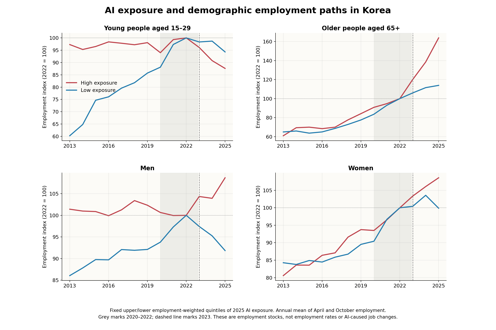
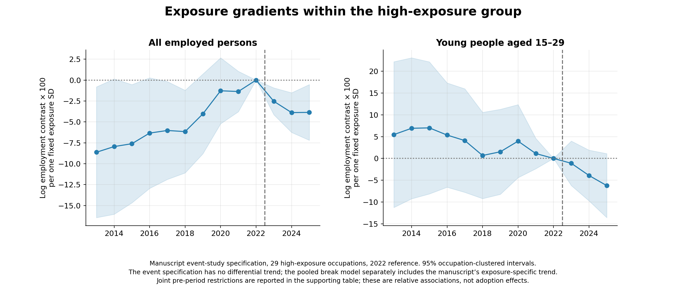
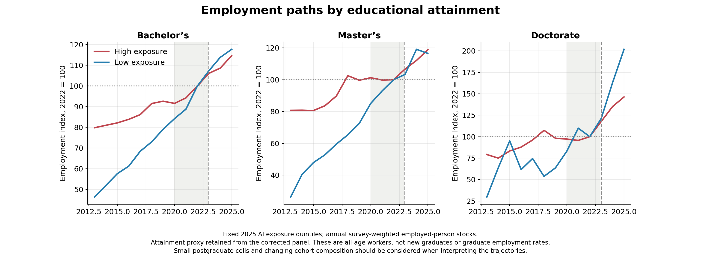
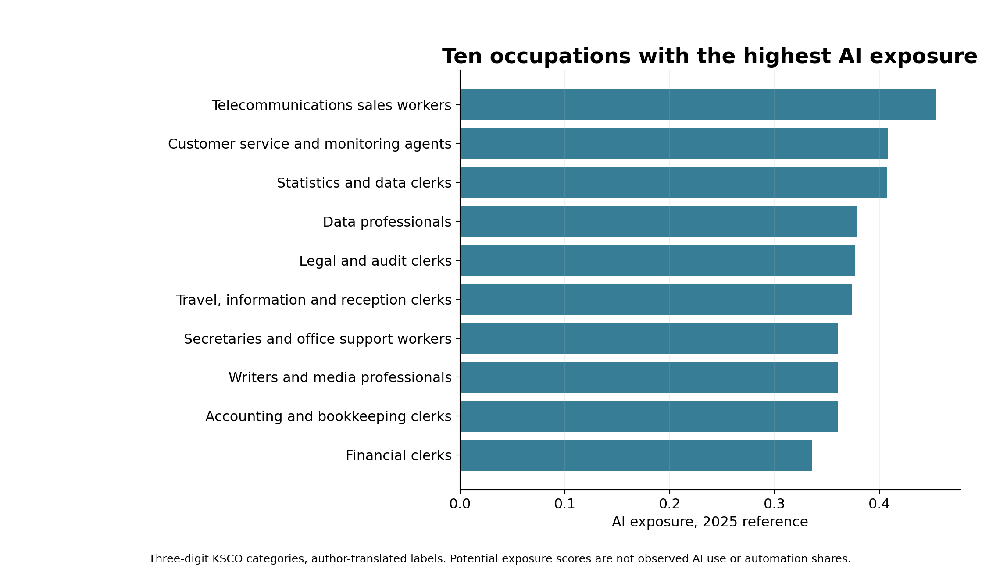

Growth without Entry · Research data explorer
Time-Horizon AI Exposure
Each node is an occupation. Position separates predicted human task duration from content exposure. Brighter nodes have higher time-horizon AI exposure; node area is proportional to employment. Representative occupations are labelled.
Time-horizon AI exposure
0 · lowerHigher
Scroll or use + / − to zoom.
Drag to pan. Select a node for its record.
Time is a transferred prediction, not an observed Korean completion time. Employment is the survey-weighted mean of April and October waves, 2023–2025, across recorded ages and education groups. Node area is proportional to employed persons; the radius therefore follows a square-root scale. The 2026 model scenario does not imply that employment was measured in 2026. Colour uses a fixed scale across scenarios.
Korea · 2025 exposure reference · Manuscript specification
Employment growth and demographic divergence
High-exposure occupations grew by 8.6% between 2022 and 2025, while their employment of people aged 15–29 fell by 12.4%. Employment of people aged 65+ in the same occupations grew by 63.9%. These are changes in employment stocks, rather than changes in employment rates.
Groups follow the manuscript’s employment-weighted quintile rule, applied to fixed 2025 AI exposure. High comprises 29 occupations and low comprises 25. Occupations are held fixed across years and demographic groups. The GPT-5 reference horizon is approximately 203 minutes. The original 33-occupation sample is retained separately as a replication check.
Download annual aggregate employment · Download demographic figure

Break estimates using the manuscript’s model
Within the 29 high-exposure occupations, one standard deviation higher AI exposure is associated with a −4.62 log-point post-2022 relative employment break, net of the exposure-specific linear trend. Its occupation-clustered p-value is 0.0014 and its 2,000-permutation coefficient p-value is 0.0210. Omitting each occupation in turn gives coefficients from −5.45 to −3.72. Holding the original 33 occupations fixed gives −4.19 log points with the 2025 score.

Full demographic estimates and supporting checks
| Population | Break, log points | Cluster SE | Cluster p | Permutation p, coefficient |
|---|---|---|---|---|
| All employed persons | -4.62 | 1.30 | 0.0014 | 0.0210 |
| Aged 15–29 | -2.37 | 2.89 | 0.4185 | 0.5792 |
| Aged 15–34, sensitivity | -5.49 | 2.06 | 0.0128 | 0.0870 |
| Aged 65+ | +0.50 | 5.08 | 0.9223 | 0.9510 |
| Men | -4.55 | 1.95 | 0.0274 | 0.0570 |
| Women | -4.14 | 1.31 | 0.0037 | 0.0920 |
| Aged 55–64 | -2.37 | 3.63 | 0.5182 | 0.5112 |
The model uses annual log employment, occupation and year fixed effects, fixed 2019–2021 occupation employment weights and an exposure-specific linear trend. Exposure is standardised once within the candidate sample. There is no annual restandardisation. The outcome for young people includes ages 15–29; ages 15–34 are a sensitivity analysis. Zero employment cells are excluded from log regressions without a pseudocount.
The unrestricted event study rejects jointly flat pre-period gradients for the all-age sample. The trend-adjusted break describes a relative association and does not identify an effect of actual AI adoption. Neither the youth nor older-group coefficient establishes that the demographic contrast was caused by AI.

All regression specifications · Permutation results · Occupation exclusion results · Pre-period tests · Employment decomposition · Method specification
Demographics, education and labour-market indicators
A fuller view of Korea’s exposed workforce
The presentation follows the questions illustrated in Massenkoff and McCrory’s labour-market study (2026), using Korean survey data and our 2025 exposure measure. The radar comparison, top-ten occupations, employment-growth scatter, worker characteristics, employment trajectories and young recent-start series are shown separately. Their observed-use and unemployment measures are not substituted with our potential-exposure scores or employment stocks.
Worker characteristics
2025 worker characteristics
| Category | Characteristic | Low exposure | High exposure | Difference |
|---|---|---|---|---|
| Exposure | AI exposure score | 0.066 | 0.333 | +0.267 |
| Demographics | Mean age, years | 57.0 | 43.2 | -13.9 |
| Demographics | Women (%) | 45.5 | 51.3 | +5.8 |
| Demographics | Married (%) | 61.1 | 60.0 | -1.0 |
| Demographics | Aged 15–29 (%) | 8.4 | 13.8 | +5.4 |
| Demographics | Aged 55–64 (%) | 24.8 | 14.2 | -10.7 |
| Demographics | Aged 65+ (%) | 36.9 | 4.1 | -32.8 |
| Education | Below upper secondary (%) | 35.5 | 1.1 | -34.4 |
| Education | Upper secondary (%) | 41.5 | 19.3 | -22.1 |
| Education | Junior college (%) | 11.2 | 16.9 | +5.7 |
| Education | Bachelor’s degree (%) | 11.1 | 55.2 | +44.1 |
| Education | Master’s degree (%) | 0.6 | 6.4 | +5.8 |
| Education | Doctorate (%) | 0.1 | 1.1 | +1.0 |
| Labour market | Weekly working hours | 33.3 | 39.4 | +6.1 |
| Labour market | Monthly pay, KRW million | 2.04 | 3.96 | +1.92 |
| Labour market | Regular employees (%) | 29.1 | 77.4 | +48.3 |
| Labour market | Self-employed (%) | 25.2 | 9.8 | -15.4 |
| Sample | Estimated employed persons, millions | 5.51 | 5.78 | +0.27 |
| Sample | Unweighted person-wave records | 159,023 | 71,677 | -87,346 |
2022 worker characteristics
| Category | Characteristic | Low exposure | High exposure | Difference |
|---|---|---|---|---|
| Exposure | AI exposure score | 0.067 | 0.335 | +0.268 |
| Demographics | Mean age, years | 55.8 | 41.8 | -14.0 |
| Demographics | Women (%) | 43.4 | 51.3 | +7.9 |
| Demographics | Married (%) | 63.0 | 60.6 | -2.4 |
| Demographics | Aged 15–29 (%) | 8.5 | 17.1 | +8.6 |
| Demographics | Aged 55–64 (%) | 27.2 | 11.7 | -15.5 |
| Demographics | Aged 65+ (%) | 30.9 | 2.7 | -28.2 |
| Education | Below upper secondary (%) | 38.8 | 1.5 | -37.3 |
| Education | Upper secondary (%) | 42.0 | 21.9 | -20.1 |
| Education | Junior college (%) | 9.7 | 17.6 | +7.9 |
| Education | Bachelor’s degree (%) | 9.0 | 52.3 | +43.3 |
| Education | Master’s degree (%) | 0.5 | 5.9 | +5.4 |
| Education | Doctorate (%) | 0.0 | 0.8 | +0.8 |
| Labour market | Weekly working hours | 34.9 | 38.4 | +3.5 |
| Labour market | Monthly pay, KRW million | 1.93 | 3.51 | +1.58 |
| Labour market | Regular employees (%) | 27.8 | 75.8 | +48.0 |
| Labour market | Self-employed (%) | 25.2 | 10.2 | -15.0 |
| Sample | Estimated employed persons, millions | 5.78 | 5.32 | -0.46 |
| Sample | Unweighted person-wave records | 167,435 | 73,140 | -94,295 |
Percentages describe each exposure group’s workforce. Educational attainment includes bachelor’s, master’s and doctoral categories separately. It is the retained attainment proxy, not a new-graduate classification. Monthly pay covers positive-paid wage employees and is nominal. Low exposure is not zero exposure.
Download both years · Download the formatted table
Employment by educational attainment

Download education trajectories · Download PDF
Exposure and observed occupational growth

The scatter uses all 162 occupations and observed 2022–2025 employment growth. It is not a forecast and is distinct from the trend-adjusted panel regression within the high-exposure quintile.
Recent job starts among young people

A recent start means the current job began in the survey month or preceding two months. This surviving stock differs from the source study’s monthly job-finding flow. It does not measure first jobs or all new hires.
Download recent-start aggregates · Download PDF
Highest-exposure occupations

Search the analytical records
Occupations and tasks
Loading the task corpus, approximately 11 MB…
The initial view shows the ten highest time-horizon exposure occupations under GPT-5 (2025). Ranks always refer to all 162 mapped occupations; search filters do not redefine them. Human durations and exposure scores are estimates. Original Korean task wording is retained as source data.
Optional comparisonWhere does the horizon change the ranking most?Expand / collapse
The ten occupations with the largest absolute rank difference between BGE content exposure and BGE time-horizon exposure, among all 162 occupations. This comparison holds the encoder fixed. Larger rank changes are relative reordering, not observed automation or a rise in absolute exposure.
Content exposure rankTime-horizon exposure rank
| Occupation | Content exposure | Horizon exposure | Content rank | Horizon rank | Absolute rank gap |
|---|
Top ten by time-horizon exposure
2025 reference · Model comparison
AI exposure across selected occupations
The red solid line shows the 2025 reference. The purple dashed line shows the 2026 comparison, and the blue line shows conventional task exposure E. All three series use the same 20 occupations and the same raw score scale.

Existing analytical snapshots are retained, with GPT-5 H50 of 203 minutes for 2025 and Claude Opus 4.6 H50 of 718.8 minutes for 2026. Human durations and completion weights are estimates. The scores measure potential exposure, not observed adoption or employment effects.
03 / Interpretation and provenance
Content exposure, conditioned on task length
The measurement rule
λs(m) = es × pm(d̂s)
es is predicted content exposure. d̂s is predicted human completion time in minutes. pm is the transferred model-specific completion curve evaluated at that duration. The horizon is measured in human task time, not AI runtime.
The weight lies between zero and one. Horizon exposure therefore cannot exceed the corresponding content score. A rank increase changes relative prominence within a specified population.
How scores are aggregated
Task scores are averaged within a dictionary entry. Entry means are then averaged within each three-digit KSCO occupation. No employment or task-frequency weights are applied to these occupational scores.
The explorer includes 37,583 mapped task statements and 1,519 statements without a retained occupational link. All 39,102 statements retain their own scores and source IDs. Sentence numbers are zero-based, as in the analytical files.
Observed and estimated information
The task wording comes from the Korean Dictionary of Occupations; the displayed IDs retain the analytical entry and sentence numbering. Content scores and human completion times are model predictions. The completion weights are transferred estimates. They have not been validated as Korean task-specific agent success probabilities.
Employment comparisons use fixed 2025 exposure quintiles selected with 2019–2021 employment weights. The original E5-selected 33 occupations are retained only for a separate replication check. The explorer’s rank comparisons cover all 162 mapped occupations. Longer horizons are capability scenarios, not forecasts of employment or national AI adoption.
Sources and coverage
- Korea Employment Information Service / Work24, Korean Dictionary of Occupations, 2020 source edition. Source IDs use the analytical KEIS2020 entry numbering, not live Work24 API identifiers.
- METR task-completion time horizons, four model snapshots retained from the analytical release. This explorer does not claim to show the latest frontier models.
- Anthropic Economic Index, economic primitives, source duration estimates used in the transfer model. These are estimates associated with AI-use conversations, not timed observations of Korean workers.
- O*NET, source task framework used in the transfer pipeline.
- Release metadata and English occupation labels. English occupation names are author translations, not official KSCO English labels.
Source text is reproduced with permission confirmed by the project owner. Original source rights remain with their respective holders. No Korean employment microdata or full manuscript is distributed here.
Scope of validation
Duration estimates are transferred across language and work contexts. Validating task boundaries, completion standards and human times for each country is outside this application. The explorer supports inspection and reproducibility of the index, rather than treating the scores as directly observed automation outcomes.